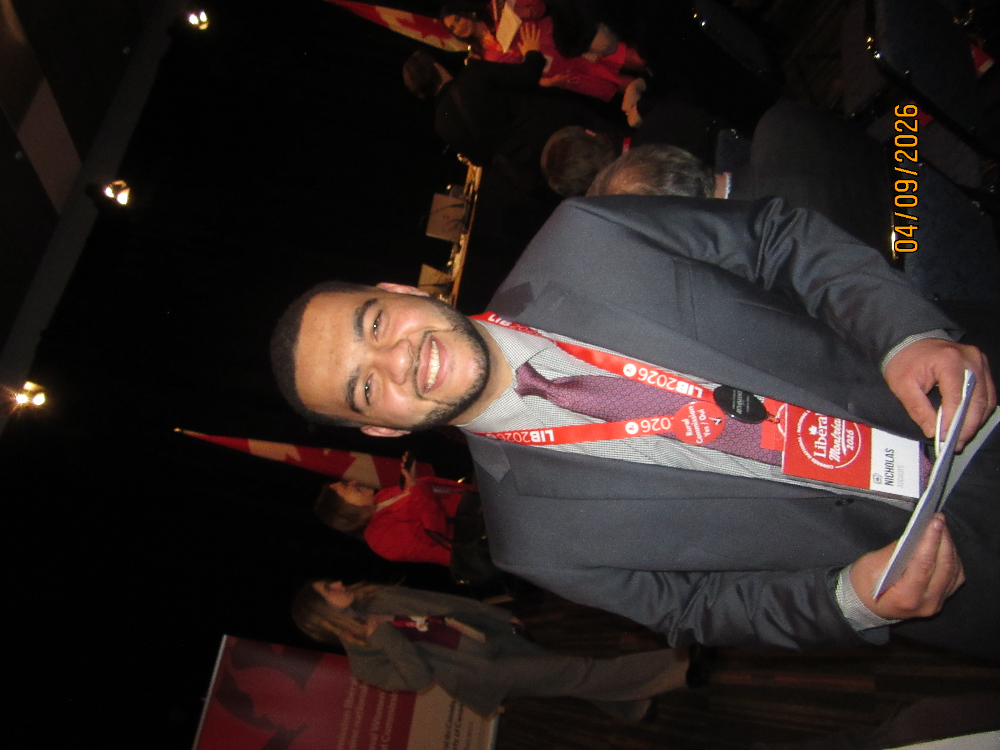
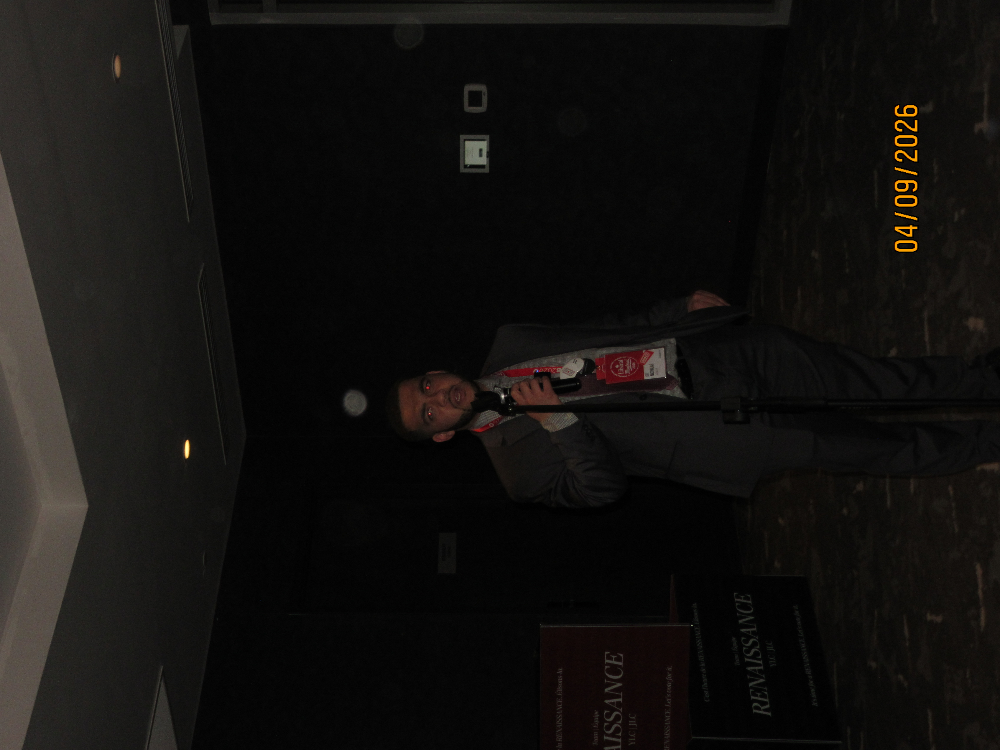
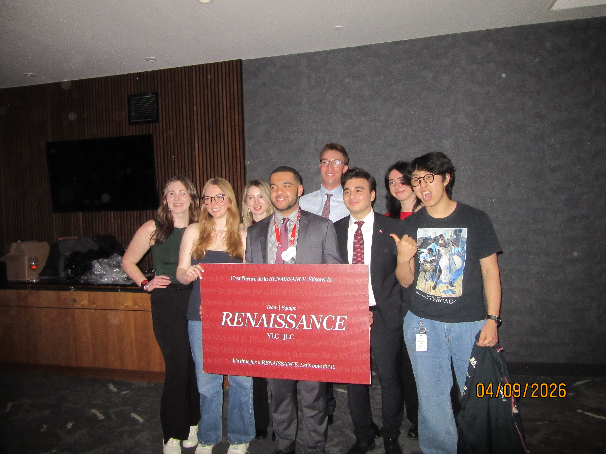

Nicholas
“Nich” Aboagye
University of Waterloo student, political organizer, and public-service leader focused on youth engagement, democratic participation, and building stronger communities across Canada.


The Story
Grounded in community, shaped by service.
Nicholas “Nich” Aboagye is a Ghanaian-Canadian University of Waterloo student completing a Bachelor of Arts in Political Science with French Studies. His journey is defined by a deep commitment to public service and a belief in the power of youth engagement to shape Canada's future.
With roots in Ontario and a perspective enriched by his heritage, Nich has dedicated himself to bridging the gap between grassroots organizing and institutional leadership. His work has taken him from local communities to the highest offices of government, always with a focus on empowering those around him.
Fluent in English and French, Nich navigates the complex landscape of Canadian politics with a bilingual approach that emphasizes inclusion and unity.
Vision & Leadership
Building a stronger, more inclusive political movement.
Renewal
Focusing on organizational growth and modern digital strategies to revitalize youth participation in democratic processes.
Inclusion
Active outreach to underrepresented communities, ensuring every young voice has a seat at the decision-making table.
Grassroots
Empowering local organizers with the tools and mentorship needed to create meaningful change in their own neighborhoods.
Experience
Bridging policy and participation.
National Chair, Young Liberals of Canada
Canada-wide
Leading the youth wing of the Liberal Party of Canada with a focus on digital mobilization, outreach, and internal renewal.
Communications Intern, Office of the Prime Minister
Ottawa, ON
Supported media strategy and press tour coordination. Recognized by the University of Waterloo for co-op excellence in this role.
Parliamentary & Ministerial Support
Ottawa, ON
Gained deep institutional exposure working within ministerial and parliamentary environments, focusing on public affairs and policy coordination.
Grassroots Organizer
Ontario
Extensive experience in volunteer management, community outreach, and digital advocacy for various civic and political initiatives.
A Mission for Renewal
“Politics is about more than just representation—it’s about creating space for voices that have traditionally been left out of the conversation.”
Nich’s work is driven by the belief that a healthy democracy requires the active, energetic participation of its next generation. Through strategic digital engagement and deliberate community outreach, he is helping build the infrastructure for a more responsive and inclusive political future.

Connect
Interested in collaborating, speaking engagements, or organizing? Let's start a conversation about the future of civic engagement in Canada.
Direct Inquiry:
hello@nichaboagye.ca